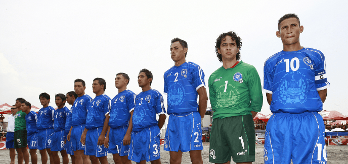
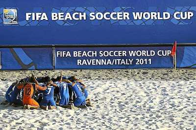
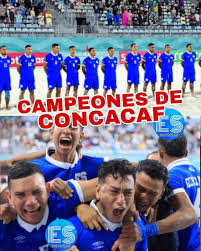
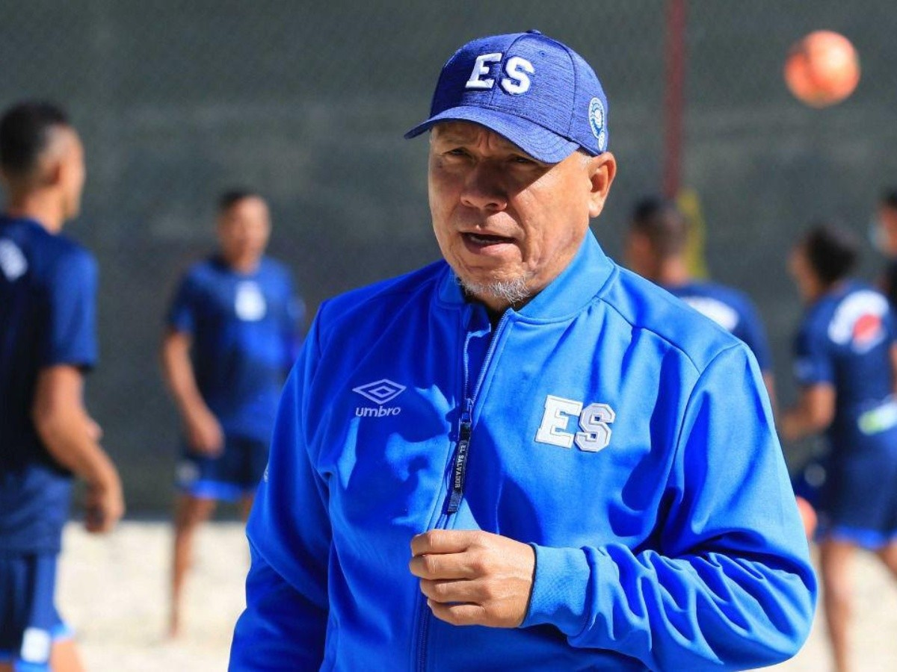
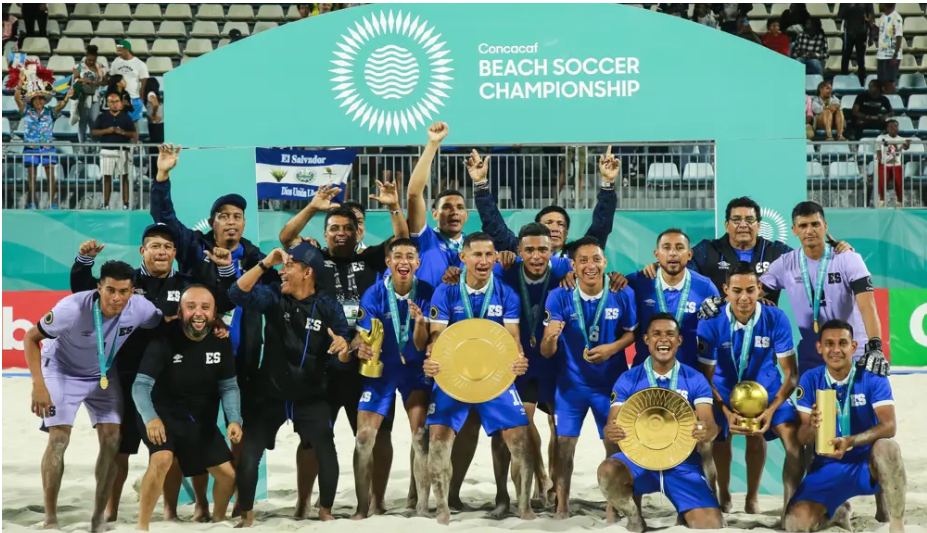

Historia de la Selección de Fútbol Playa de El Salvador

2007: El Nacimiento de una Pasión
La selección de fútbol playa nació oficialmente en 2007 bajo la dirección del técnico Rudis Mauricio Gallo. En un país donde el fútbol tradicional domina, esta nueva disciplina comenzó a capturar los corazones de los salvadoreños.

2008: Primera Clasificación Mundialista
La Azul playera sorprendió al mundo clasificando por primera vez al Mundial de Fútbol Playa de la FIFA Dubái 2009. El país entero comenzó a prestar atención a estos guerreros de arena.

2011: Orgullo Mundial - Cuarto Lugar
En el Mundial de Rávena, Italia 2011, El Salvador hizo historia al alcanzar el cuarto lugar del mundo. Fue la mejor participación de una selección centroamericana en este deporte.

2015-2023: Dominio Regional
La selecta playera ha sido protagonista en los campeonatos de CONCACAF, clasificando a múltiples mundiales y consolidándose como potencia de la región. Ha sido finalista en numerosas ocasiones.

Rudis Gallo: El Arquitecto del Sueño
El técnico nacional ha sido figura clave. Su liderazgo, disciplina y visión han formado generaciones exitosas. Es un símbolo del crecimiento del fútbol playa en El Salvador.

Hoy: Inspiración Nacional
Hoy en día, la selección sigue siendo un emblema del deporte nacional, motivando a jóvenes a soñar con vestir los colores azul y blanco en la arena.